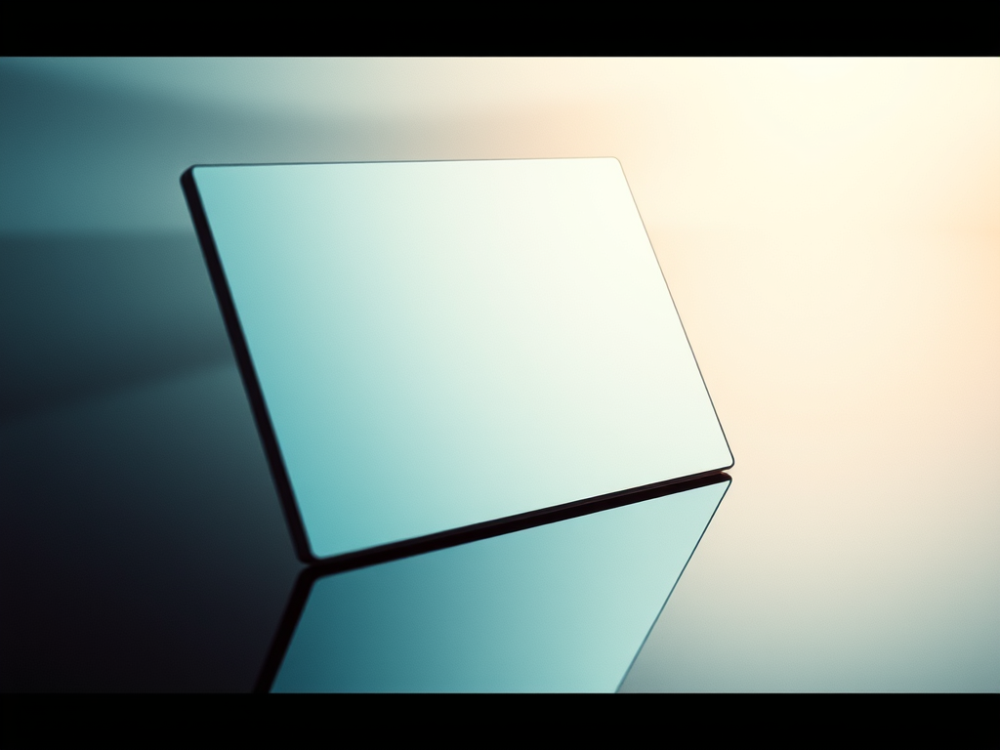

🪞 "Mirror" as NFT: Truth, Reflection, and the Eye of a Digital Spirit.
In a world obsessed with filters and curated realities, the mirror remains one of the few objects that refuses to lie. Inspired by Sylvia Plath’s piercing poem Mirror, our latest NFT artwork captures the raw essence of truth—unbiased, unfiltered, and unflinching.
🔍 What Is the “Mirror” NFT?
This NFT is a visual meditation on Plath’s lines:
“I am silver and exact. I have no preconceptions. Whatever I see I swallow immediately Just as it is, unmisted by love or dislike.”
The artwork fuses digital minimalism with symbolic geometry, portraying the mirror not as a passive object, but as an active witness—a “little god, four-cornered.” It challenges viewers to confront their own reflections, stripped of illusion.
🌐 Why This NFT Resonates in the Digital Age
In the age of blockchain and AI, the concept of a mirror takes on new meaning. Just as Plath’s mirror swallows reality without bias, so too does the blockchain record truth without distortion. This NFT invites collectors to own a piece of digital philosophy—an eternal reflection encoded on the blockchain.
🧠 Philosophical Themes Behind the Art
-
Truth vs. Perception: The mirror doesn’t interpret—it reflects. This NFT asks: Can we handle truth without narrative?
-
Identity and Ego: What do we see when we look at ourselves without emotional fog?
-
Divine Witnessing: The “eye of a little god” suggests omniscient observation. In a decentralized world, who watches whom?
🔗 NFT Details and Purchase Info
-
Title: Mirror: The Eye of Truth
-
Blockchain: Ethereum
-
Edition: 1/1
-
Available on: Rarible via the link.